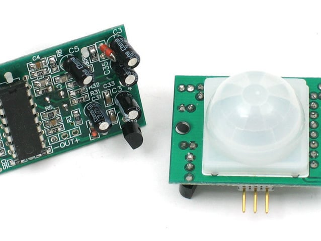
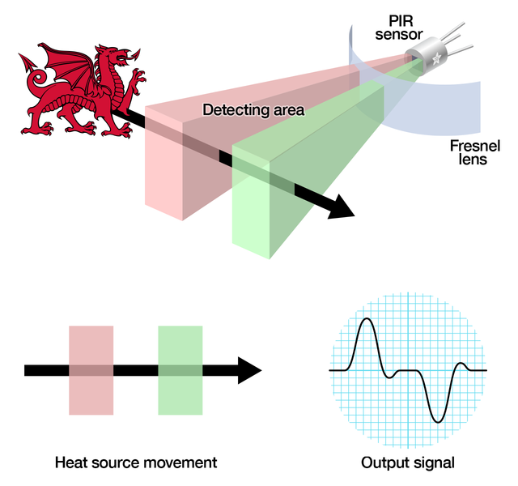
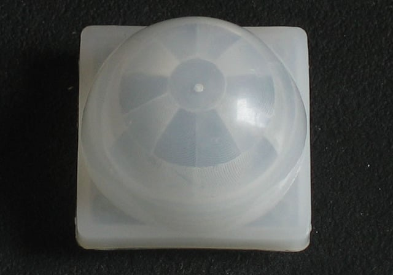

A motion sensor is a special device that notices movement within a specified range. This range can be around the detector or just in front of it, depending on what you choose.
These are usually used to notice any movement around our buildings and to scare off and illuminate whoever is creeping around at night.
Basic motion detectors notice objects in and around 6.5 feet to 70 feet. You can even purchase ones that detect further than that if needed.
Types include optical, infrared, and radio wave motion detectors, which each come in handy for different situations.
PIR Motion Sensor
PIR sensors are more complicated than many of the other sensors explained in these tutorials (like photocells, FSRs and tilt switches) because there are multiple variables that affect the sensors input and output.
The passive infrared (PIR) sensor itself has two slots in it, each slot is made of a special material that is sensitive to IR.
The lens used here is not really doing much and so we see that the two slots can 'see' out past some distance (basically the sensitivity of the sensor).
When the sensor is idle, both slots detect the same amount of IR, the ambient amount radiated from the room or walls or outdoors.
When a warm body like a human or animal passes by, it first intercepts one half of the PIR sensor, which causes a positive differential change between the two halves.
When the warm body leaves the sensing area, the reverse happens, whereby the sensor generates a negative differential change. These change pulses are what is detected.
DATASHEET
The IR sensor itself is housed in a hermetically sealed metal can to improve noise/temperature/humidity immunity.
There is a window made of IR-transmissive material (typically coated silicon since that is very easy to come by) that protects the sensing element. Behind the window are the two balanced sensors.
There is actually a JFET inside (a type of transistor) which is very low-noise and buffers the extremely high impedence of the sensors into something a low-cost chip (like the BIS0001) can sense.

PIR sensors are rather generic and for the most part vary only in price and sensitivity. Most of the real magic happens with the optics.
This is a pretty good idea for manufacturing: the PIR sensor and circuitry is fixed and costs a few dollars. The lens costs only a few cents and can change the breadth, range, sensing pattern, very easily.
In the diagram up top, the lens is just a piece of plastic, but that means that the detection area is just two rectangles. Usually we'd like to have a detection area that is much larger.
To do that, we use a simple lens such as those found in a camera: they condenses a large area (such as a landscape) into a small one (on film or a CCD sensor).
For reasons that will be apparent soon, we would like to make the PIR lenses small and thin and moldable from cheap plastic, even though it may add distortion. For this reason the sensors are actually Fresnel lenses.

Most PIR modules have a 3-pin connection at the side or bottom. The pinout may vary between modules so triple-check the pinout!
It's often silkscreened on right next to the connection (at least, ours is!) One pin will be ground, another will be signal and the final one will be power.
Power is usually 3-5VDC input but may be as high as 12V. Sometimes larger modules don't have direct output and instead just operate a relay in which case there is ground, power and the two switch connections.
The output of some relays may be 'open collector' - that means it requires a pullup resistor. If you're not getting a variable output be sure to try attaching a 10K pullup between the signal and power pins.
An easy way of prototyping with PIR sensors is to connect it to a breadboard since the connection port is 0.1" spacing. Some PIRs come with header on them already, the one's from adafruit have a straight 3-pin header on them for connecting a cable.
Connecting PIR sensors to a microcontroller is really simple. The PIR acts as a digital output, it can be high voltage or low voltage.
All you need to do is listen for the pin to flip high (detected) or low (not detected) by listening on a digital input on your Arduino.
Its likely that you'll want retriggering, so be sure to put the jumper in the H position!
Power the PIR with 5V and connect ground to ground. Then connect the output to a digital pin.
TESTING

APPLICATIONS
A passive infrared (PIR) sensor is an electronic sensor that measures infrared (IR) light radiating from objects in its field of view.PIR sensors are commonly used in security alarms, motion detection alarms, and automatic lighting applications. They use a pair of pyroelectric sensors to detect heat energy in the surrounding environment.
PIR sensor-based alarms can be designed to ignore certain shapes of moving objects or only detect motion above a certain height, making them suitable for households with pets.
PIR sensors do not rely on visible light to detect motion or heat signatures, making them an effective solution for detecting intruders or movement in low-light or dark environments.
They are highly versatile and reliable devices that can detect motion and presence with great accuracy.